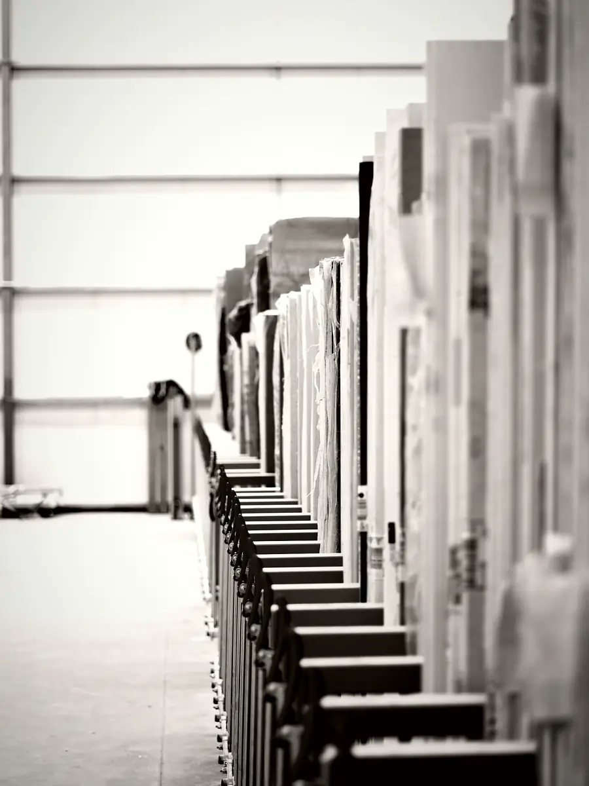
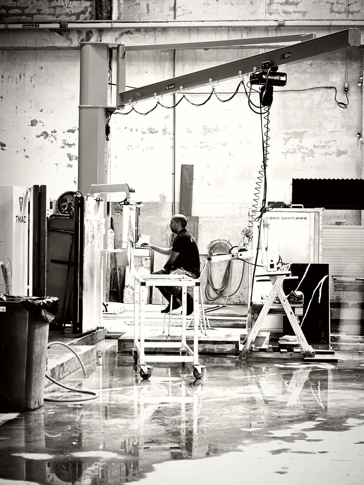
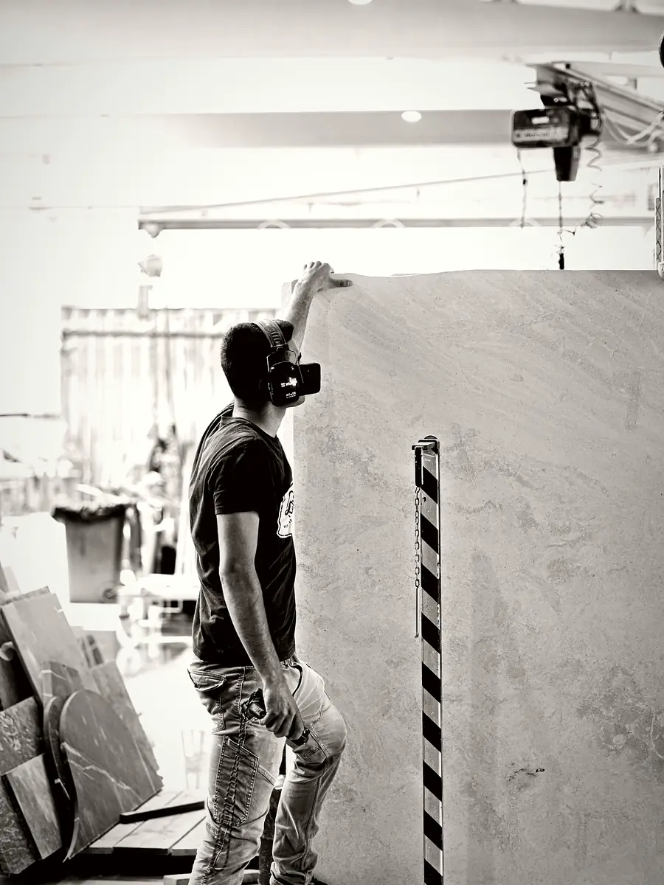
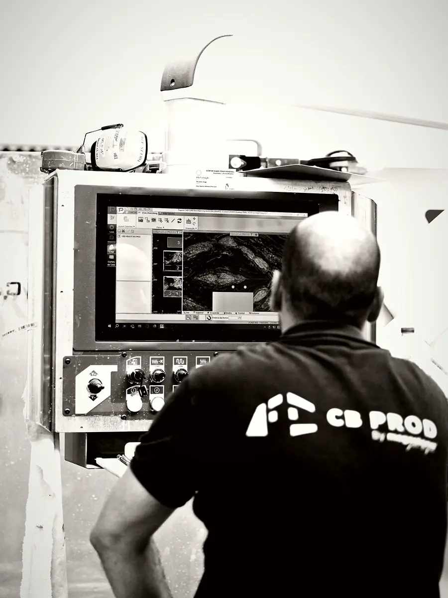
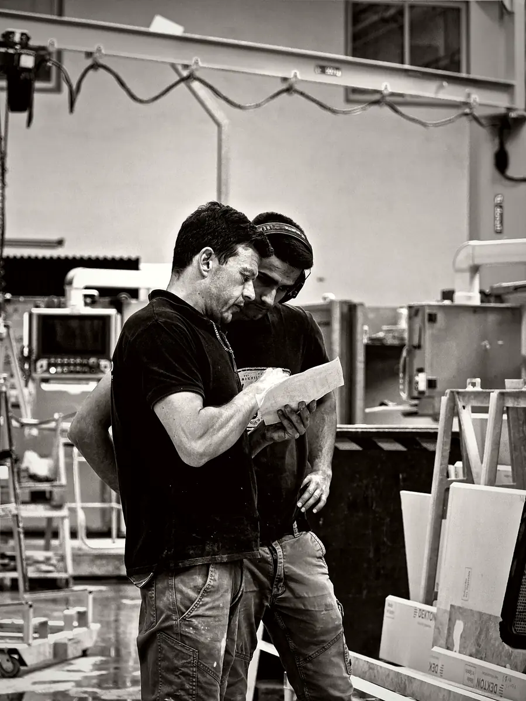
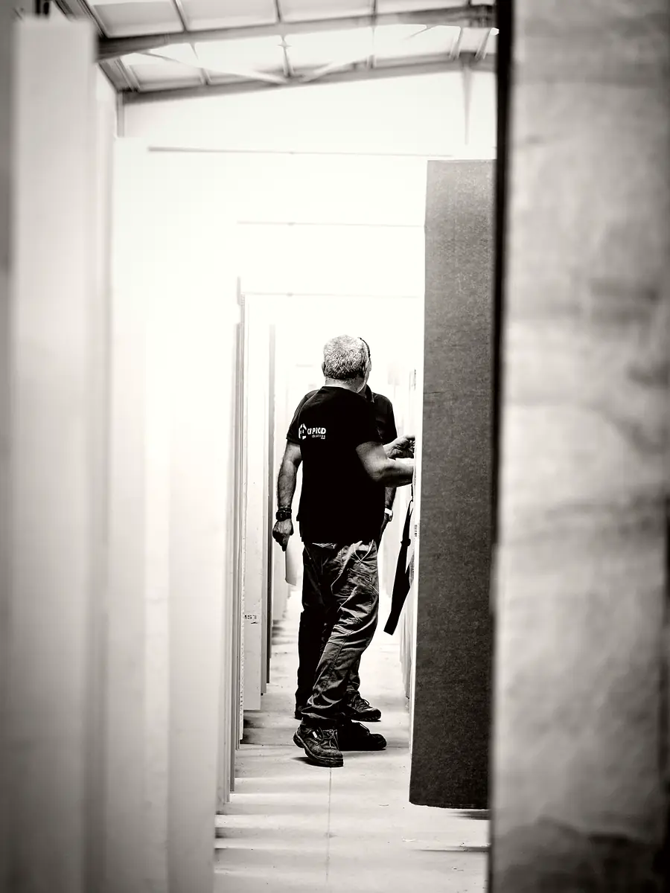

CB Prod · Mafra, Portugal
Our Igreja Nova factory, working for stone and kitchen professionals
CB Prod processes and fabricates natural stone and engineered materials in its Igreja Nova factory in Mafra, Portugal. With family craftsmanship handed down over more than three generations, modern equipment and exacting quality standards, we manufacture to your drawings, from raw material to delivery.
The Igreja Nova factory in Mafra
Our factory and head office are at Estrada Nacional N°9, kilometre 29, in Igreja Nova, in the municipality of Mafra, around forty kilometres from Lisbon. Everything we deliver leaves these workshops: kitchen worktops, bathroom pieces, cladding, staircases and architectural or decorative pieces.
We bring together under one roof the receipt and storage of slabs, cutting, finishing, inspection and packing. This set-up lets us follow every order closely and settle technical questions directly on the workshop floor.
The factory manufactures for the companies of the CB Surfaces group, including the CB Surfaces, Easy Plan and Kitchenfab brands, as well as for independent trade customers in France, Portugal and further afield.
Processing and fabrication: CNC cutting and hand finishing
Cutting and machining are handled by our computer-controlled machines. Accurate to a tenth of a millimetre, they follow the dimensions on your drawings to produce outlines, corners, sink and hob cut-outs, tap holes and edge profiles, with a consistency that hand cutting cannot guarantee across a run of pieces.
The machine does not do everything, though. Each piece then goes through the hands of our craftsmen, who rework the edges, soften the arrises, polish and check the surface under the light. This handwork is what separates a piece that has simply been cut from one that is ready to be delivered to your client.
This combination of skills applies to marble, granite, quartzite and quartz as well as to ceramic, Corian®, Minéralis and recycled stone.
Technical support and quality control
Before any cutting, our team studies the drawings and technical files you send us. We check that the dimensions are consistent, spot the tricky points, such as a cut-out too close to an edge or a piece too long for a slab, and ask you the right questions before production starts.
We then prepare the cutting plan: the layout of the pieces on the slabs is optimised to reduce offcuts, match the veining where possible and respect the direction of the material.
At the end of the process, every piece is inspected:
- dimensions and squareness against your drawings;
- cut-outs, holes and edges;
- surface appearance and consistency of the finish;
- conformity with the approved order.
It is then packed securely for transport.
Visiting the factory by appointment
Nothing beats seeing a slab in person. A photo cannot show the depth of the veining, the texture of a matt finish or the way a colour shifts between daylight and indoor lighting.
We welcome trade customers to Igreja Nova from Monday to Friday, 8.00am to 5.30pm, by appointment only. You can come on your own to see our workshops and methods, or bring your client to approve a natural stone slab, a colour or a finish together.
Let us know in advance which project the visit concerns: we prepare the relevant slabs and samples and take the time to answer your technical questions. Bring your drawings if you can, so we can talk in concrete terms about the cutting plan, thicknesses and cut-outs.
The workshop in pictures

Our slab stock 
The Mafra workshop 
A slab on the overhead crane 
Running the CNC machine 
Checking a piece against the drawing 
Selecting slabs for a project
Your questions
Where are CB Prod pieces made?
All our pieces are fabricated in our Igreja Nova factory in Mafra, Portugal, around forty kilometres from Lisbon. The slabs come from quarries and surface manufacturers selected among international suppliers. We cut them on CNC machines, finish them by hand, inspect them and then deliver them to France, Portugal or further afield.
Do you come on site to take measurements or set pieces in place?
No. CB Prod works exclusively on bespoke manufacturing and delivery. We work from the drawings, dimensions and technical information you send us. Surveying on site and setting the pieces in place remain your responsibility or that of your partners, which leaves you fully in charge of the relationship with your client.
Which materials does your factory work with?
We fabricate natural stone, granite, marble and quartzite, including the treated Sensa and Texta versions, as well as Silestone®, Compac, Stone Italiana and MStone quartz, Dekton®, The Size, Materia, Infinity and MStone ceramics, Corian®, Minéralis and recycled stone. We can also select and purchase the material on your behalf.
Send us your drawings
Dimensioned drawings, technical files, material and finishes: we review your request and reply within 48 working hours.